Ngan Tran Project 4

Exercise 5: Animal Journey
This is the first time I applied p5play in this exercise.
I based on the examples I learned and applied them in my exercise, referring to the ideas from the demos. I used the intro from demo 2 as the opening for my exercise. I learned and applied createSprite() to create the movement of carrots.
Transitioning scenes is very interesting, and I can use different classes to create separate views; the way of interacting in each place becomes different.
I thought about some things that I will apply in my final project. I met the requirement for 4 bitmap images, added sound, mouse commands to navigate to another page, and text on each page

Final Phase Artist Statement
Tick Tock Unlocked is a game that combines math and a clock that represents actual time. This is where people can experience simple math problems that are randomly displayed using numbers and a mouse to click and buttons to check the results. Each scene is presented separately and related to the other, such as math, clock, or the journey of the caterpillar to find the apple. The project is pressing the key and mouse, waiting for everyone to explore and be surprised. I use the SceneManager, Sound, and p5. Play Libraries allow you to design and add numerous animations to create an incredibly engaging experience.I combined Interface as Visual Language Systems and Mashups and Theatrification to fully express the meanings I wanted to convey to users. Interface as Visual Language Systems and Mashups brings a distinct visual language to each scene through the animation of clocks, buttons, and mathematical interfaces. I used sprites and scenemanager animations to bring more personal and complex interfaces than the original. Theatrification is the stage where scenes can express their own moods from a light-hearted Intro, to a tense Math Quiz, to a happy Clock Scene, or a relaxing Worm Scene. Other effects and factors, such as fireworks or flowers, are one of the things that bring joy, making it interactive with the user.
Tick Tock Unlocked is an interactive clock game, I applied some of the knowledge I learned from Exercise 5 including a total of four different scenes and combined with some graphics to create a hidden scene based on the number of minutes when it is 00, 15, 30, 45 at all hours of the day. I applied the createSprite() and addAnimation() functions to create novelty and create effects for the scene. The intro scene is a simple scene combined with different images and ellipses. In the middle of the scene, there is a button, when you click on it, it will move to the next scene. The second scene is the math scene, this is where you interact with the project. You will participate in solving math problems to be able to move to another scene in 10 seconds. If you answer wrong or run out of time, the worm scene will be the next scene for you.
With the phrase “good kids have apples,” I applied it to the worm scene when users have wrong results or run out of time, because when users are really eager to see the clock, they will become hasty to solve the math, and will become angry when having to switch to another scene. Apples and worms here are metaphors for rewarding those who can be patient to play relax, when the worm meets the apple, the math scene will appear again, which is another opportunity for users to solve the math.
When you succeed in solving the math and the next scene is the clock, which is showing the actual time. Combined with the clock is the congratulatory fireworks effect, and “Congratulations” to congratulate you on reaching the final result of this project, and that is the result when you have achieved it. In this scene, if the minute hand is 00, 15, 30, or 45, a hidden scene will appear. I created a lot of flowers surrounding the clock, creating a pleasing effect when you can see the time at previously set milestones.
The process of creating the project was very difficult. I had to constantly edit the code when I added another scene or images to the scene, the code errors were constantly occurring, and I had to edit it immediately so that it would not be too wrong. However, I did it, I am very proud of what I did in this project, I do not think it looks better when I edit it, and I learned a lot from the projects, libraries, and classes.
Speed dating log paper
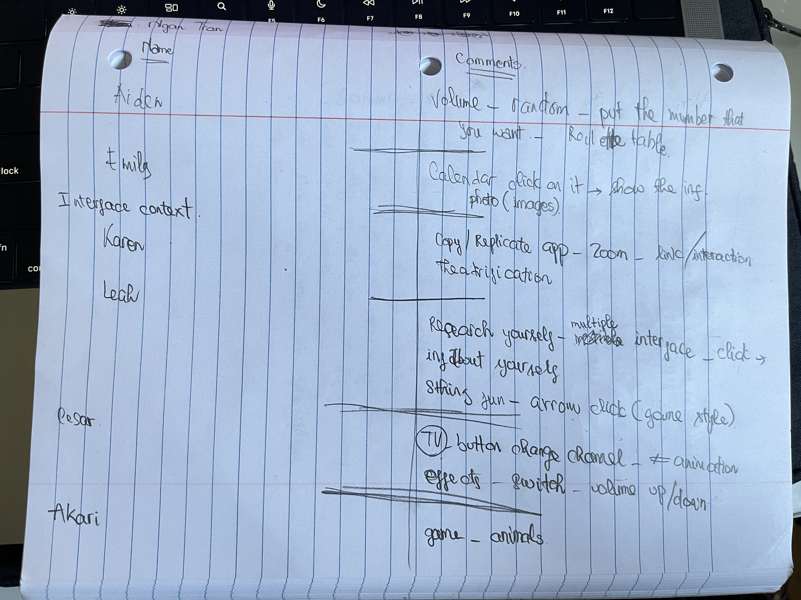
Final proposal project
See the Final Project Proposal SlideSketches, Wireframes, and Moodboard
{kind=link}
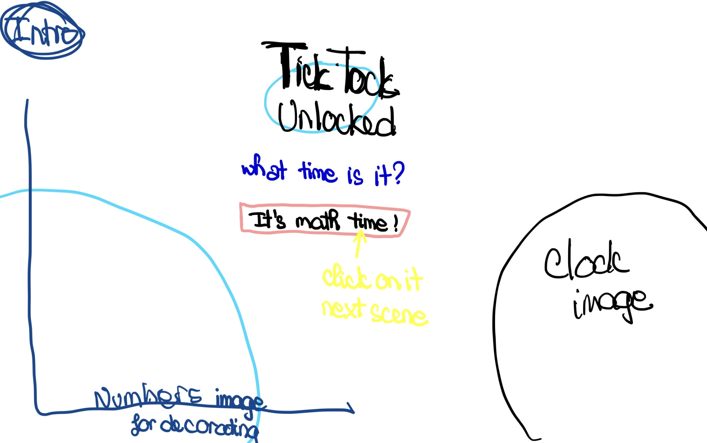
Math{kind=link}
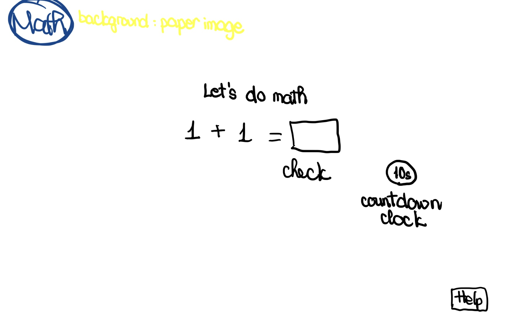
Time Show 1
{kind=link}
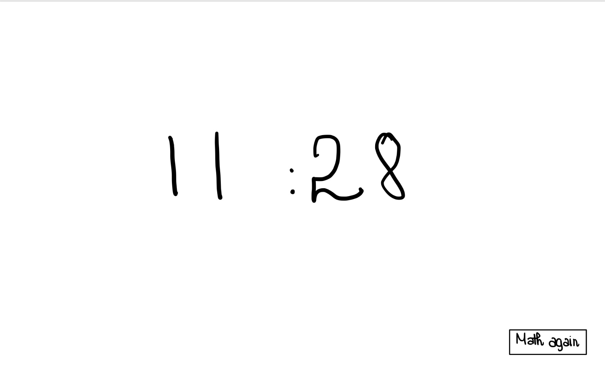
Time Show 2
{kind=link}
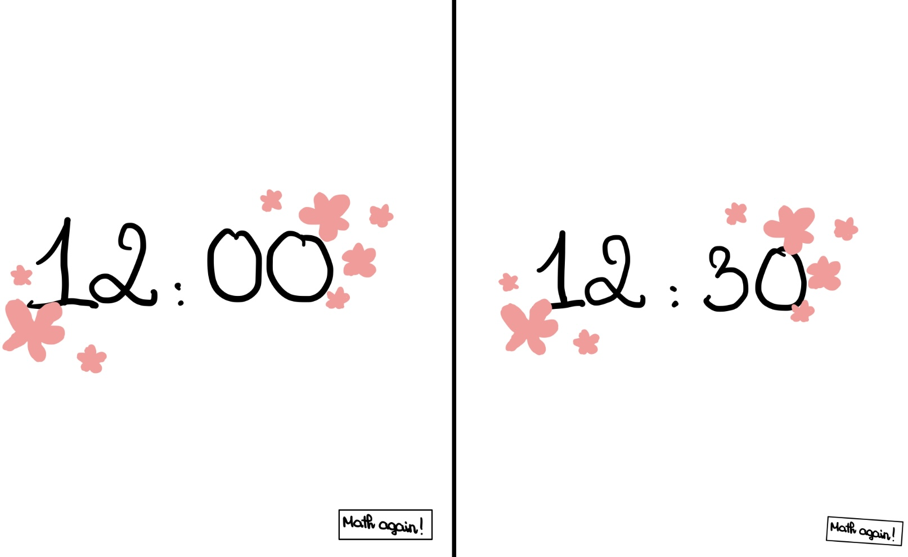
Wrong or Out of time
{kind=link}
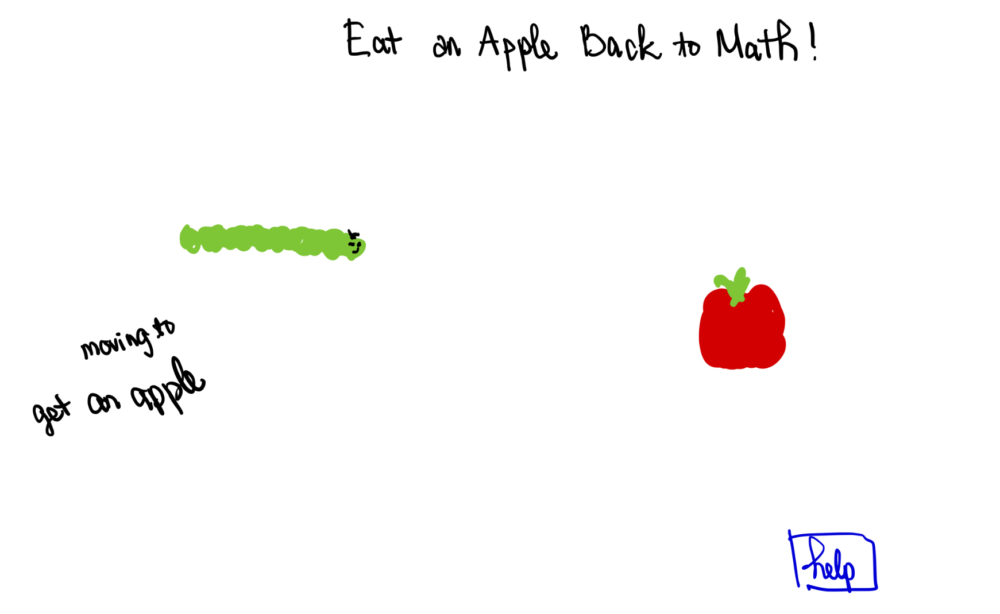
Wireframe
{kind=link}
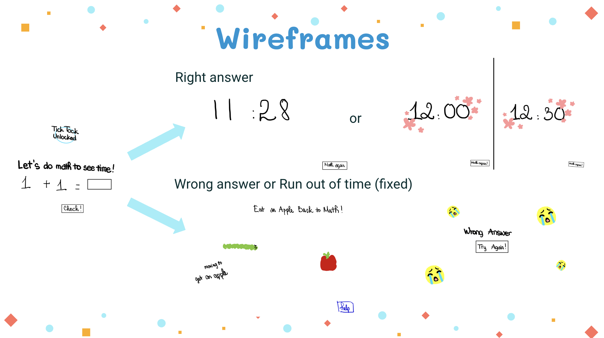
Moodboard
{kind=link}
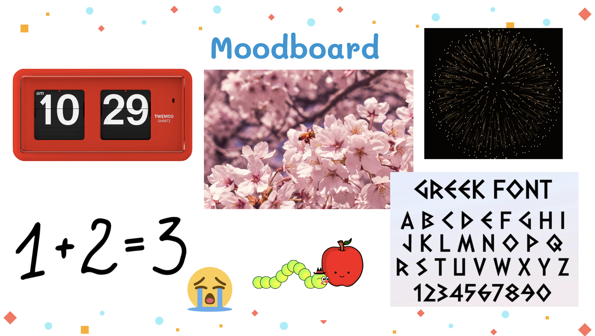
{kind=link}
{kind=link}
{kind=link}
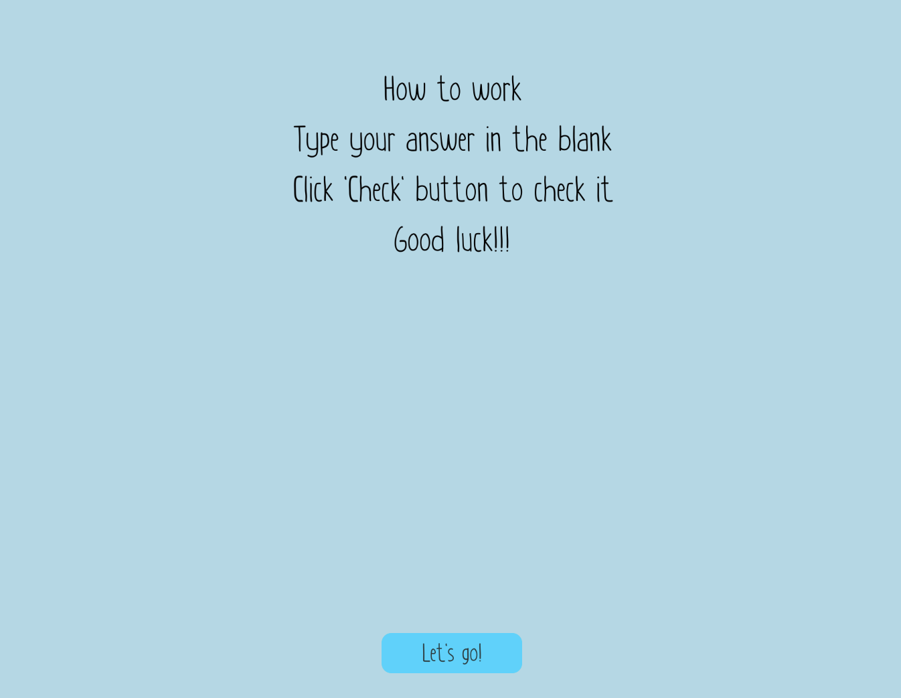
Correct Answer with flower Scene{kind=link}
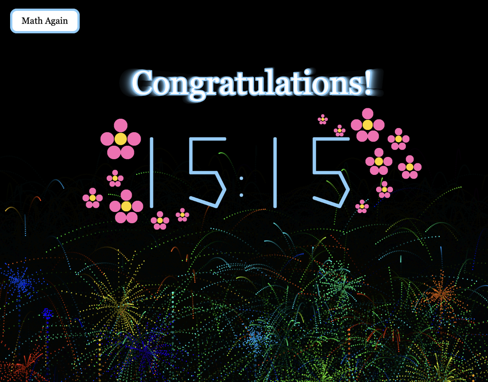
Wrong Answer Scene
{kind=link}
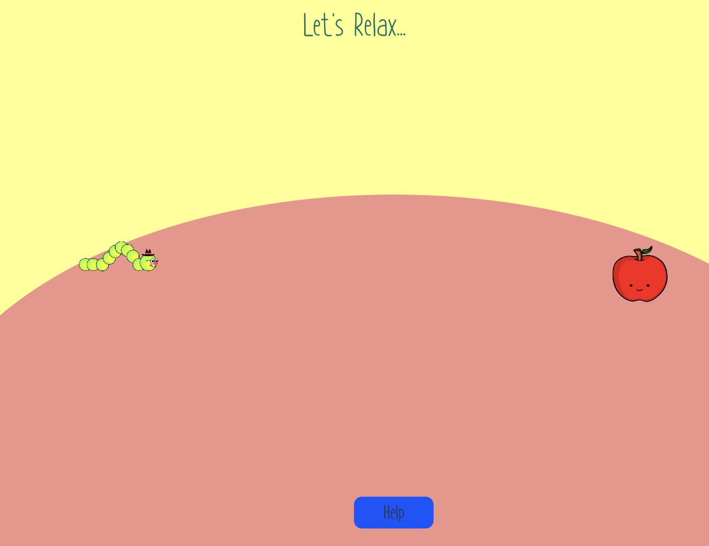
Help 2 Scene
{kind=link}
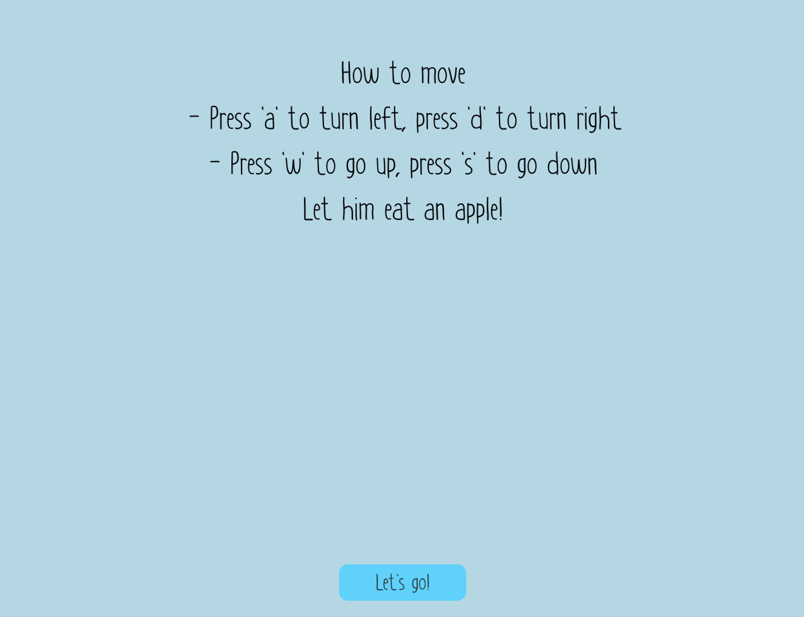